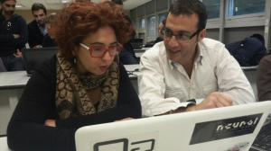

Dopo alcuni giorni dalla conclusione dello STVDIVM, e dopo aver pubblicato un resoconto di tutte le cose belle che siamo riusciti a fare insieme, ecco che abbiamo raccolto anche i materiali.
Alcuni di voi ce li hanno chiesti, ci fa quindi piacere condividere con voi le slides dei docenti, la rivista (potete scaricarla in pdf) che abbiamo distribuito ai partecipanti e che contiene una piccola selezione degli articoli/post di questo blog e, per concludere, alcune immagini come ricordo e per dirvi ancora grazie
A voi!
The STVDIVM is over: our laptops are now turned off and everyone is returning home, carrying a set of new skills and fresh relationships.
We brought together twenty-four archaeologists, including students, researchers, professionals, and MiBACT’s employees (from the Italian Ministry of Cultural Heritage). No one before had ever dove so deep into the world of Archaeological Open Data. During the three days meeting, they received and processed much information, and they soiled their hand with data: downloading, cleaning and publishing them. They also debated about legal and ethical issues, and about licenses. Sometimes their eyes popped out of their heads while looking at the magic of Open Data. More important though, they realised that working with data is not the same as working with Open Data. Data are always data, but open data enhances their potential thanks to the ability of amplifying community engagement and collaboration.
We won’t tell you word for word what happened, but what you should know is that we definitely kept our promises. Going beyond the theoretical and practical concepts, what was really important is the step forward made in shaping a community of people driven by the idea of sharing data as a way to deeply innovate and transform Archaeology.
What the attendees at the STVDIVM truly understood is that working with oOpen dData – and sharing them – implies the development of an open and inclusive community, in which each and everyone is able to advance the knowledge, generating a positive and collective value.
This is the birth of what we can define a community of practice: a network of informal communication linking a group of professionals (archaeologists, in our case) working and learning together, always relying on each other’s knowledge.
In Archaeology the community of practice should not be limited solely to the excavation team, but it should be rather defined as an international and multidisciplinary virtual community. The enormous potential of data sharing through the Internet allows us archaeologists to constitute ourselves as a scientific community of practice.
Raw data is indeed the fundamental building block of any research, and anyone working in this field has to turn to it in order to develop new hypothesis or historical reconstructions.
It might start slowly at first – we have seen it already in Pisa Open School of Archaeological Data – but eventually the data-sharing culture gets contagious, and the Archaeological Data Therapy always produces new ideas in those who received it.
The Pisa meeting in July brought to the creation of MODA (Archaeological Open Data Manifesto), intended to shape the identity of the newly born community and to define its goals. After the meeting in Pompeii, the community makes another step forward with the decision of building a collaborative platform, used to gather and share raw data, and, with the help of the community, to prepare them for publishing as open datasets.
Sharing data in open format implies a choice that is in the first place cultural rather than technological. Let’s take this route and technology will follow, giving us all the tools needed to overcome the hurdles.
Particle physicists have ArXiv.
Archaeologists will have TABVLARIVM.
And that’s a promise.
L’idea di curarsi con i dati è al tempo stesso bizzarra e geniale, anzi, direi necessaria. Il motto del progetto #datatherapy del MIT è infatti quello di diffondere “creative data literacy for non-data people”. La terapia dei dati è “un processo pratico volto a costruire nelle persone la capacità di trovare e raccontare storie con i dati in maniera creativa”.
Ed è esattamente quello che abbiamo tentato di fare durante l’OpenDataDay del 21 febbraio scorso, a Bari. Nella track dedicata ai beni culturali mi sono occupato di condurre un’attività dedicata proprio a coloro i quali hanno poca dimestichezza con i dati e la miriade di strumenti con i quali poterci lavorare, ma erano là animati da curiosità e una gran voglia di fare qualcosa, di “sporcarsi le mani”.
Per professione mi occupo di geomatica, e naturalmente ho voluto basare il lavoro da me proposto proprio sui dati geografici, una tipologia di informazioni che sta letteralmente rivoluzionando le nostre vite, poichè tutto, ma proprio tutto ciò che abbiamo intorno possiede un’informazione localizzata. Perfino noi stessi, mentre ci muoviamo con i nostri smartphone al seguito, siamo inconsapevoli produttori di dati geografici. Non ci credete? Se avete uno smartphone Android date un’occhiata alla cronologia delle vostre posizioni.
Nel lontano 2009 la Penn State University lanciò una serie di video divulgativi con il Geospatial Revolution Project. Con gli amici del blog TANTO ne abbiamo curato la traduzione, vi invito -quando avrete tempo- a guardarli per intero se volete capire come le informazioni spaziali hanno rivoluzionato le nostre vite.
Torniamo all’ODD
La terapia dei dati, da me proposta inconsapevolmente a chi ha partecipato all’attività il 21 febbraio scorso, si è basata su due dei repository di informazioni e dati aperti e liberi più noti al mondo: OpenStreetMap per i dati geografici e Wikipedia per le informazioni di carattere descrittivo. Si tratta entrambi di progetti supportati dalla Wikimedia Foundation, interamente costruiti con i liberi contributi di milioni di utenti da tutto il mondo, in piena filosofia collaborativa peer to peer.
L’obiettivo è stato quello di aggiornare OSM con le informazioni eventualmente presenti in Wikipedia per elementi presenti sul territorio pugliese, nell’ambito dei beni culturali. Qui sotto trovate la presentazione con il workflow che abbiamo seguito durante l’attività.
Alzi il mouse chi non ha utilizzato la notissima enciclopedia aperta e libera almeno una volta nella vita. Nata nel 2011, i 124 milioni di pagine in 288 lingue che la compongono possono essere modificate da chiunque dei 49 milioni di suoi utenti e non c’è un comitato di redazione né alcun controllo preventivo sul materiale inviato, che deve avere comunque un punto di vista neutrale. I suoi contenuti sono distribuiti con licenza CC BY-SA 3.0 che ne consente il riuso allo stesso modo.
Cos’è OpenStreetMap
OSM è un progetto nato nel 2004 che punta a creare e rendere disponibili dati geografici, liberi e gratuiti a chiunque ne abbia bisogno. Il progetto è stato lanciato perché la gran parte delle mappe online disponibili normalmente si pensano libere, ma hanno in realtà restrizioni legali o tecniche. Chiunque può utilizzare i dati di OpenStreetMap a qualsiasi scopo (anche commerciale) e senza costi di licenza (ODbL), purché ne citi la fonte. I suoi utenti attualmente sono quasi 2 milioni, mentre gli oggetti che la compongono (vedi slide 16 della presentazione) sono complessivamente più di 3 miliardi.
Cosa abbiamo fatto?
All’attività hanno partecipato Antonella Ciociola e due ragazzi, ingegneri informatici, dei quali purtroppo non ricordo il nome e ne ho perso le tracce. Siamo partiti da uno strumento web che possiamo considerare l’anello di congiunzione tra Wikipedia e OSM, si tratta di WTOSM, un acronimo che sta appunto per “Wikipedia To OpenStreetMap”. Si tratta di una piattaforma sviluppata in seno alla Fondazione Bruno Kessler da Simone Groppo e Cristian Consonni. L’istanza pubblica che abbiamo usato durante l’ODD15 è ospitata dalla Fondazione Edmund Mach a questo link.
In sostanza, WTOSM non fa altro che mostrare quali sono gli articoli presenti in Wikipedia e che potrebbero essere mappati anche in OSM perché appartengono a categorie di oggetti localizzabili sul territorio, ad esempio chiese, aeroporti, siti archeologici, aree protette ecc. In Wikipedia questi oggetti infatti potrebbero avere un template Coordinate che ne consentirebbe la localizzazione già nella pagina che li descrive.
Viene usata una simbologia per indicare quali articoli in Wikipedia sono totalmente privi di coordinate, quali le possiedono ma non sono collegati a oggetti in OSM, e quali invece sono geocodificati in Wikipedia e viceversa in OSM possiedono anche il tag al relativo articolo nell’enciclopedia.
Dopo aver familiarizzato con l’interfaccia web e la struttura dati di OSM, Antonella ha scelto di dedicarsi ai teatri pugliesi presenti in Wikipedia. Prima del suo lavoro, quelli collegati tra l’enciclopedia e OSM erano solo 2 su 11 totali, alla fine è riuscita a concludere il lavoro: 10 su 11, l’undicesimo è il Teatro Real Borbone di San Severo, che è stato demolito negli anni ‘30 e non andrebbe considerato da WTOSM.
Il workflow di lavoro adottato è stato grosso modo il seguente:
scegliamo l’articolo da mappare basandoci sulla legenda;
il modo più facile per creare/modificare gli elementi in OSM (bisogna creare un proprio account ovviamente) è l’editor web ID, che si aprirà direttamente sulle coordinate in OSM una volta cliccato sull’icona in WTOSM;
individuiamo sulla mappa l’elemento al quale si riferisce l’articolo di Wikipedia;
se l’elemento esiste come nodo o poligono, aggiorneremo solo la key Wikipedia;
se l’elemento non esiste affatto, lo creeremo noi stessi come nodo o poligono, aggiungendo anche la key Wikipedia.
A questo link è possibile guardare un utilissimo tutorial di Andrea Borruso che mostra in pochi minuti l’intero processo.
Au contraire: aggiornare le coordinate in Wikipedia
Nei casi in cui siano gli articoli di Wikipedia ad essere privi di coordinate, è possibile aggiornare il template Coordinate. Questi sono contrassegnati in WTOSM con l’icona di una W rossa. In sostanza si tratta di invertire il processo:
individuiamo in OSM l’oggetto cui l’articolo in Wikipedia si riferisce;
posizioniamo la mappa OSM con al centro l’oggetto;
copiamo dall’URL nel browser le coordinate (es. 40.63893/17.94436);
andiamo ad editare in wikitesto l’articolo in Wikipedia (anche in questo caso, bisogna avere un account) inserendo il template Coordinate es. {{coord|40.63893|17.94436|display=title}};
una volta pubblicate le modifiche, l’articolo sarà geotaggato.
Nel mio videotutorial qui sotto il procedimento viene illustrato nei dettagli.
Sporchiamoci le mani: i teatri pugliesi tra OSM e Wikipedia (di Antonella Ciociola)
Avevo una missione per l’OpenDataDay 2015: trovare un esperto di open data per il project work dei ragazzi dell’IISS Giulio Cesare di Bari per A Scuola di Open Coesione. L’idea di mettermi a “giocare” con i dati in prima persona non mi aveva mai sfiorato. Da insegnante di lettere, le grandi questioni teoriche su partecipazione, beni comuni e cultura condivisa mi hanno sempre affascinato: come questioni teoriche, appunto, sulle quali è difficile non essere d’accordo e su cui speculare all’infinito. Tuttavia, il piacere di “sporcarmici le mani” l’ho sperimentato con una attività molto pratica e apparentemente semplice, per la quale sono stata “cooptata” da Pietro Blu: aggiornamento di OSM con informazioni presenti in Wikipedia, attraverso la categoria di WTOSM da me scelta: Teatri della Puglia (il teatro è una mia grande passione, e in qualche modo mi sembra di averle così reso omaggio).
A rispondere “Prego, nessuna domanda è stupida”, con un sorriso d’incoraggiamento, sono abituata, è una routine per me: ma quanto può essere entusiasmante porla, anche timidamente, quella domanda stupida, lasciarsi guidare dalla risposta, risolvere un problema? Può essere addirittura inebriante, a volte.
Sono partita press’a poco così: “Pietro, scusami, ma io non so cosa sia una ortofoto…”; sono entrata in confidenza con nodi, vie e relazioni (elementi, primitive geometriche che rappresentano gli oggetti reali su OSM); ho creato gli account necessari; ho spulciato ben benino le categorie di WTOSM; dopodiché, seguendo le istruzioni del tutorial di Andrea Borruso e i pronti suggerimenti di Pietro, dopo un paio d’ore ho raggiunto l’obiettivo di aggiungere, per tutti i teatri pugliesi presenti su OSM, la key Wikipedia. Nella maggior parte dei casi, l’unico elemento da aggiornare è stata solo la key Wikipedia; in due casi, il teatro Mediterraneo di Bisceglie e il teatro Traetta di Bitonto, è stato necessario creare il poligono (attraverso lo strumento area) che identificasse l’edificio su OSM e poi aggiungere la key Wikipedia (“E come devo disegnare il poligono?”). In ultimo, Pietro ha aggiunto le coordinate in Wikipedia anche al teatro Petruzzelli di Bari, che ne era orfano.
A fine hackathon, ne rimaneva soltanto uno, il teatro Mercadante di Cerignola, privo di coordinate in Wikipedia… ancora per poco. Ormai le mani me le sono sporcate, e il lavoro l’ho ultimato, seguendo il videotutorial “au contraire” prima citato, qualche giorno dopo, in autonomia: nella tabella della categoria Teatri della Puglia di WTOSM non ci sono più icone rosso-allarme. E una grande, eccitata soddisfazione che mi ha prima sorpreso e poi interrogato: missione (davvero) conclusa? Piuttosto, comincia adesso! Durante l’attività appena descritta ho conosciuto alcuni teatri pugliesi di cui ignoravo l’esistenza, e contemporaneamente ho notato l’assenza di altri, che invece frequento regolarmente, in OSM e in Wikipedia. Ora so che su OSM posso mapparli, su Wikipedia posso scriverci degli articoli, e poi posso collegare le informazioni. E magari troverò anche qualcuno insieme a cui provare a raccontare questa nuova storia condivisa… insieme all’esperto di analisi open data, di cui ancora ho bisogno.
Estrarre dati da OSM
I due ingegneri informatici, più interessati allo sfruttamento dei dati da OSM, hanno preferito giocare con overpass-turbo, un tool web sviluppato da Martin Raifer che sfrutta le omonime API per l’estrazione di dati da OpenStreetMap, con query basate sui numerosissimi tag che descrivono gli oggetti presenti nel repository OSM.
Con overpass-turbo è possibile creare delle query in maniera molto semplice, anche utilizzando il wizard che consente ad esempio di cercare i teatri presenti a Bari. Ulteriori informazioni su come costruire query le trovate qui.
I dati estratti possono poi essere esportati in molti modi:
come geoJSON da scaricare in locale sul vostro computer;
come GPX per poterli usare nel vostro dispositivo GPS;
o, cosa molto interessante, salvandoli in geoJSON direttamente come gist.
Quest’ultima opzione consente di salvare il dataset come Gist per poi visualizzarlo direttamente in GitHub come mappa ed editare i dati, ma anche con geojson.io, un potente tool online che consente la visualizzazione come mappa e l’editing dei dati presenti nel gist anche comodamente come tabella (link).
Insomma, tirare fuori dati da OSM ed esportarli in tutti i gusti che volete è davvero una passeggiata alla portata di tutti.
OSM e Wikipedia, uno per tutti, tutti per uno
Editare OpenStreetMap e curare gli articoli di Wikipedia, può suscitare grande coinvolgimento, per alcuni può diventare addirittura una vera e propria dipendenza. I meccanismi in gioco sono infatti quelli legati alla gratificazione personale nell’aver contribuito alla conoscenza condivisa, e magari ottenerne anche riconoscimento pubblico, perché no.
Si tratta di ciò che Clay Shirky -uno dei più sagaci social media analyst- definisce come “surplus cognitivo”, ovvero il bisogno di dedicare buona parte del proprio tempo libero al bene comune, anche come senso di appartenenza a delle comunità, appunto quelle degli osmers e dei wikipediani.
Che siano animati semplicemente da grande partecipazione e coinvolgimento, o da una vera e propria dipendenza, a osmers e wikipediani dovrebbe andare il ringraziamento di tutti noi. Non solo perché utilizziamo i due servizi, ma soprattutto perché questi due immensi repository di informazioni e dati aperti e liberi, stanno diventando una preziosa risorsa per chiunque voglia utilizzarli per creare applicazioni anch’esse aperte e libere, o per fare business.
Organizzare hackathon dedicati all’uso di strumenti come OSM e Wikipedia, dunque, non solo ha un grande valore dal punto di vista didattico e di stimolo alla condivisione gratuita, ma diventa anche un’opportunità per far nascere idee innovative. Perciò non dimenticate mai, se e quando sfrutterete OSM e Wikipedia per fare business, che ci sarà sempre qualcuno da ringraziare. Magari fatelo restituendo a queste due comunità un po’ del vostro lavoro, sempre in maniera aperta e libera. Vi sentirete di certo meglio.
Avremmo voluto ma…
Avevo preparato anche un’altra attività basata su Silk.co, una interessante piattaforma per la visualizzazione di dataset come mappe e grafici dinamici in pagine web, ideale per fare data journalism o come strumento facile da usare e molto intuitivo per scopi didattici. Ecco un semplicissimo esempio costruito con i dati aperti del Comune di Bari http://barituristica.silk.co

 Dopo alcuni giorni dalla conclusione dello STVDIVM, e dopo aver pubblicato un resoconto di tutte le cose belle che siamo riusciti a fare insieme, ecco che abbiamo raccolto anche i materiali.
Dopo alcuni giorni dalla conclusione dello STVDIVM, e dopo aver pubblicato un resoconto di tutte le cose belle che siamo riusciti a fare insieme, ecco che abbiamo raccolto anche i materiali.


{kind=link}